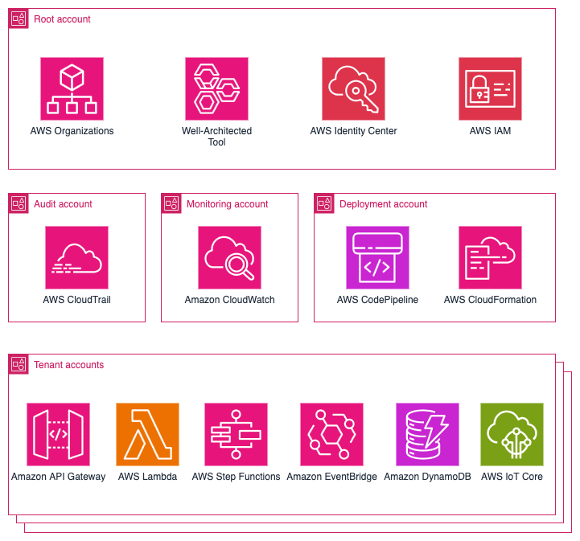
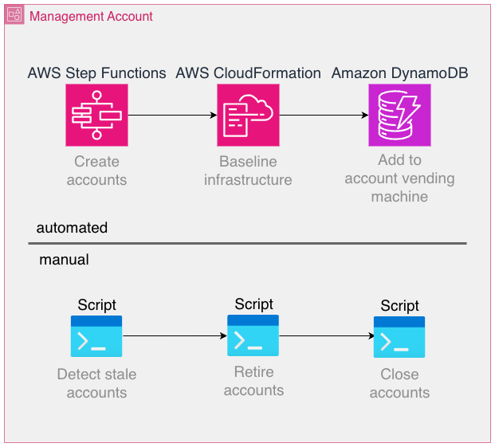
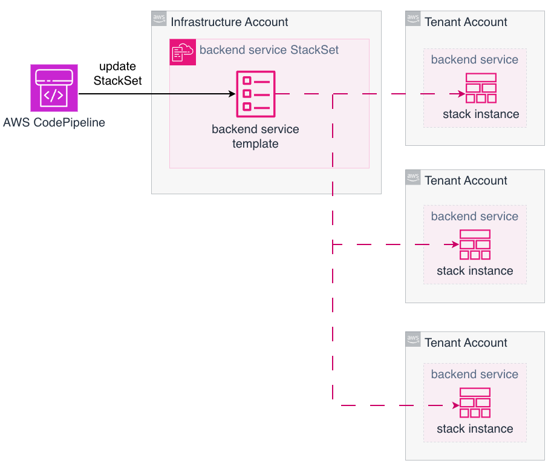

AWS 인프라 분석 - ProGlove: 세 명의 담당자가 6000개의 AWS 계정 관리
1. 개요
SaaS 플랫폼 성장 시 강력한 보안과 테넌트 격리가 중요합니다. IAM 방식은 공유 환경과 전용 환경을 모두 보호하지만, 계정별 테넌트 모델에서는 계정 자체가 격리 경계가 됩니다. 공유 계정 배포에서는 테넌트 범위의 IAM 정책과 리소스 수준 경계에 의존해야 합니다. 멀티 테넌시 환경은 운영 복잡성이 커질 수 있으므로 AWS의 계정별 테넌트 모델을 선택하면 보안 경계를 명확히 하고 서비스 소유권을 간소화할 수 있습니다.
ProGlove는 현장 작업자를 디지털 워크플로에 연결하는 스마트 웨어러블 바코드 스캐닝 솔루션을 개발합니다. 해당 스캐너는 AWS 기반 SaaS 플랫폼 Insight와 통합되어 실시간 프로세스 가시성을 제공하며, 제조, 물류, 소매업 분야 고객이 사용합니다.
2. ProGlove에서 격리된 다중 테넌트 방식을 선택한 이유
공유 멀티 테넌트 모델의 문제점은 다음과 같습니다.
- 의도치 않은 구성 오류나 취약점으로 여러 테넌트가 위험에 처합니다.
- 단일 AWS 계정에 할당량을 제한하여 동일한 할당량을 공유합니다.
- 인프라 공유로 인한 자원 소유권 판단이 어렵습니다.
- 한 테넌트 변경이 다른 테넌트에 영향을 미칩니다.
- 비용 가시성 확보 측면에서 개별 테넌트 리소스 사용량을 귀속하기 어렵습니다.
AWS는 멀티 계정 전략을 권장합니다. 대규모 환경에서는 계정을 격리하는 것이 가장 쉬운 방법이며, 각 계정마다 컴퓨팅, 스토리지, 네트워킹을 완전히 격리시킬 수 있어 보안적으로 안전합니다. 모든 테넌트에게 자체 AWS 계정을 제공하면 각 테넌트에 필요한 모든 마이크로서비스가 배포됩니다.
3. 아키텍처 분석
ProGlove가 테넌트를 관리하는 방법
현재 관리 규모:
- 6000개의 테넌트 계정 중 50%가 활성 상태입니다.
- 각각 여러 개의 AWS Lambda 함수와 지원 리소스를 갖춘 약 40개의 마이크로서비스가 운영됩니다.
- CI/CD, 관찰 가능성 및 공유 도구를 위한 70개의 내부 계정이 존재합니다.

테넌트별 계정 모델의 장점은 다음과 같습니다.
- 강력한 격리 모델을 제공합니다.
- 테넌트별 맞춤 설정이 가능합니다.
- 투명한 비용 배분이 가능합니다.
- 보안, 민첩성, 운영 투명성을 제공합니다.
테넌트에서 사용되는 데이터를 동일한 위치에 두지 않으며, 각 계정은 자체의 스토리지, 컴퓨팅 리소스, 권한을 가집니다. 보안 문제 발생 시 하나의 테넌트 계정에만 문제가 발생하고 나머지는 영향을 받지 않습니다.
AWS Cost Explorer를 이용하면 테넌트별 비용을 간편하게 보고하고 청구할 수 있으며, 사용자 기반 가격 모델을 사용하는 SaaS 제공업체에게 큰 이점입니다. AWS Well Architecture Framework를 통해 검토를 진행하며 시스템에 반영합니다.
SaaS 제공업체의 도전 과제와 절충방안
테넌트별 계정 모델은 강력한 격리 기능을 제공하지만 플랫폼 운영에 어려움을 야기합니다. 제공업체가 수천 개의 계정을 수동으로 프로비저닝, 구성, 관리할 수 없으므로 자동화는 필수입니다.
계정 생성, 기본 설정, IAM 역할, 가드레일 및 서비스 활성화를 자동화하기 위해 AWS Organizations, 서비스 제어 정책(SCP), AWS CloudFormation StackSet 같은 맞춤형 도구를 활용해야 합니다.
자동화가 필요 없는 워크플로는 스크립팅 및 수동 작업을 통해 더 효율적으로 구현할 수 있습니다. 예를 들어 AWS Step Functions를 사용하여 계정 생성을 자동화하고, 계정 사용 중지 및 삭제는 정기적으로 실행하는 스크립트를 통해 수행할 수 있습니다.

AWS Step Functions란?
여러 개의 AWS 서비스를 연결하여 하나의 거대한 워크플로로 만들어주는 오케스트레이션 서비스입니다. 일반적인 아키텍처 및 워크플로 패턴을 지원하여 분산 애플리케이션의 구성 요소를 시각적 워크플로에서 견고한 단계로 구성하여 조정할 수 있습니다.
해당 워크플로는 Amazon State Language(ASL)로 작성되며 상태라는 것으로 구성된 상태 머신으로 정의됩니다. Step Functions를 통해 개발자가 로직 관리, 분기, 병렬 실행, 시간 초과 구현을 통해 애플리케이션을 신속하게 구축하고 업데이트할 수 있으며, 애플리케이션이 순서대로 실행되도록 보장합니다.
여러 작업을 조정하거나 결과를 집계하거나 사람의 개입이 필요한 워크로드가 있는 경우 Step Functions를 사용하는 것이 좋습니다.
일반적인 사용 사례:
- 대규모 데이터 처리
- 이벤트 기반 아키텍처 구축을 위한 마이크로서비스 오케스트레이션
- 데이터 및 머신러닝 파이프라인 생성
- SaaS 애플리케이션 통합
- 생성형 AI 애플리케이션 구축
- IT 보안 및 프로세스 자동화
흐름 설명:
Step Functions에서 사용자 계정을 만듭니다. 그 다음 Step Functions가 CloudFormation에게 템플릿을 전달하여 CloudFormation 스택에서 실제 리소스를 만듭니다. IAM Role, 보안그룹, IAM Policy, Network(VPC, Subnet, Endpoints), Monitoring 등을 생성할 수 있습니다. Step Functions에서 API 호출을 통해 AWS 리소스를 만들 수 있지만 CloudFormation을 통해 훨씬 안전하게 프로비저닝할 수 있습니다.
SaaS 제공업체에서 지켜야 할 사항
SaaS 제공업체에서 개발자, 운영팀, 플랫폼 서비스 및 도구는 여러 계정에 걸쳐 작업을 해야 합니다. 이를 위해서는 IAM Role과 신뢰정책을 포함한 강력한 ID 모델이 필요합니다. 신중하게 설계하지 않으면 보안위험의 원인이 됩니다.
장기간 유효 자격 증명은 여러 계정에 배포될 때 심각한 보안 위험이 있고 모니터링하기에 부담이 되므로, 장기간 유효 자격증명은 지양하는 것이 좋습니다.
테넌트별 계정 설정에서의 할당량 문제
공유 계정 모델에서는 단일 할당량 세트를 모니터링할 수 있지만 테넌트별 계정 설정에서는 할당량 관리가 분산되어 검토하기 어렵습니다. 따라서 사전 예방적인 할당량 요청 및 모니터링이 필수입니다.
예를 들어 AWS Lambda는 단일 계정 공유 내에서 동시에 실행되는 함수의 개수에 대한 할당량을 적용합니다. 테넌트에 부하가 걸리는 경우도 고려하여 사용량을 필요에 따라 조정하는 통합 관리 화면을 제공하는 것이 중요합니다.
테넌트 간 관찰 가능성 확장
모든 테넌트가 각자의 계정을 가지고 있으면 로그, 추적 데이터를 생성하는 경우에 운영 가시성이 파편화됩니다. 관찰 가능성을 향상시키기 위해 텔레메트리(로그 및 메트릭)을 중앙 애플리케이션으로 전달하여 한 번만 정의하고 각 테넌트 계정에 다중 알림을 구성합니다. 이렇게 구성하면 비용도 절감되고 운영도 간소화됩니다.
AWS Organizations 태그 정책을 활용하여 메트릭과 로그에 AWS 계정 ID 필드를 포함하여 데이터를 쉽게 분석할 수 있게 합니다.
CI/CD 및 대규모 배포
동일한 마이크로서비스를 수천 개의 계정에 한 번에 배포하기 위해서는 AWS CodePipeline과 AWS CloudFormation StackSet이 필요합니다. 여러 테넌트 계정에 애플리케이션을 배포하는데 해당 코드는 모노레포에 저장되어 있어 라이브러리나 Lambda 레이어 등의 버전을 동일하게 유지할 수 있습니다.
각각의 파이프라인 실행은 여러 대상 계정을 병렬로 업데이트하고 중앙 계정에서는 단 한 번의 StackSet 업데이트 작업만 실행됩니다.

고려할 사항:
- 한 계정의 배포가 실패한다면 롤백 혹은 재시도 전략을 정의하고 테스트해야 합니다.
- 파이프라인을 통해 대규모 업데이트가 적용되는 데에는 상당한 시간이 발생합니다.
- StackSets은 강력한 도구이지만 아직 발전 단계에 있기에 예외 상황이 발생할 수 있습니다.
그렇기에 SaaS 제공업체에서도 플랫폼 엔지니어링에 투자를 해야 합니다.
비용관리 및 운영상의 고려사항
공유 계정 모델에 비해 비용이 계정별로 명확하게 구분되어 테넌트별 비용 보고가 매우 간편합니다.
SaaS 제공업체에서 인프라를 구성할 때 계정별로 증가하는 비용은 신중히 고려해야 합니다. 규모가 커질수록 그에 비례하게 된다면 비용이 크게 증가합니다. 예를 들어 수천 개의 계정에서 지표를 수집하기 위한 인프라를 구성할 때 비용을 줄이기 위해서는 표준 관찰 도구를 그대로 사용하는 것이 아닌 모니터링해야 할 지표를 파악하고 이를 구현할 수 있는 관찰 방식을 선택해야 합니다.
SaaS 제공업체에서 운영할 때 고려사항:
- 계정 관리 부분에서 새롭게 계정을 생성할 때마다 개발자가 수동으로 하기에는 운영 부담이 크므로 자동화를 합니다.
- SCP와 엄격한 IAM 관리를 통해 기본 보안 설정을 지킵니다.
- 개발자 팀원들이 서비스의 범위와 한계를 명확하게 이해하도록 합니다.
- 파이프라인을 잘 설계하여 수천 개의 계정으로 확장될 수 있게끔 투자합니다.
- 여러 계정을 모니터링할 때 중앙 집중화되어 있어야 하며 이것이 비용 효율적이어야 합니다.
4. 결론
강력한 테넌트 및 워크로드 격리, 투명한 비용, 문제 발생 시 영향 범위 축소가 테넌트별 계정 분리 모델의 큰 장점입니다.
3명의 인력으로 수천 개의 AWS 계정을 관리하는 것은 불가능해 보이지만 처음에 설정을 잘 잡고 자동화한다면 규모가 확장될수록 효과적으로 처리하게 됩니다.
[참고자료]
https://talk3130.tistory.com/entry/AWS-%EC%95%84%ED%82%A4%ED%85%8D%EC%B2%98-%EB%B6%84%EC%84%9D-ProGlove-%EC%84%B8-%EB%AA%85%EC%9D%98-%EB%8B%B4%EB%8B%B9%EC%9E%90%EA%B0%80-6000%EA%B0%9C%EC%9D%98-AWS-%EA%B3%84%EC%A0%95-%EA%B4%80%EB%A6%AC